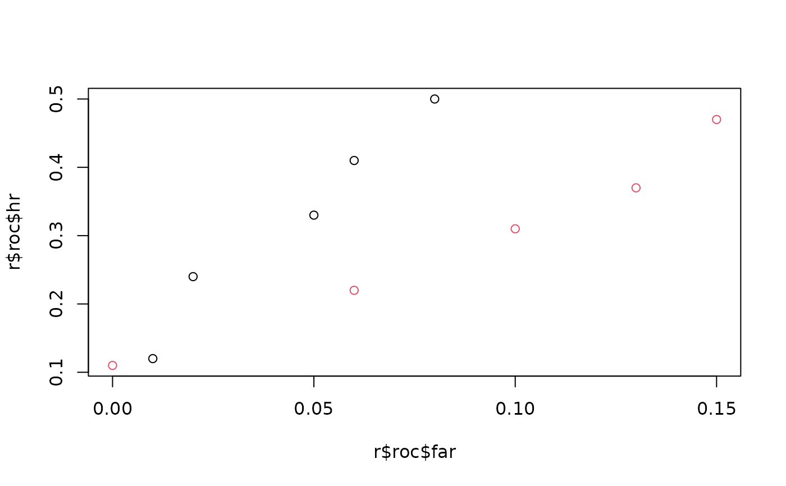

Asks how well a lineup procedure lets witnesses tell the culprit from an
innocent suspect, and how much a witness's confidence is worth. Each
witness saw a lineup that held the culprit (target present, tp) or did
not (target absent), picked the suspect, a filler or nobody (pick),
and stated a confidence (conf, higher is surer). Counting only the
identifications made at confidence c or above gives, at each cut c
from the highest down, the hit rate (suspect identifications in
target-present lineups over those lineups) and the false alarm rate
(innocent-suspect identifications in target-absent lineups over those
lineups). The points trace the receiver operating characteristic (ROC)
of Mickes, Flowe and Wixted (2012); a procedure whose curve lies higher
discriminates better. When target-absent lineups have no designated
innocent suspect, give the lineup size: every identification in a
target-absent lineup then counts, divided by size (the rate at which
an innocent suspect would be picked in a fair lineup).
Usage
lnroc(
tp,
pick,
conf,
proc = NULL,
size = NULL,
far = NULL,
nboot = 0,
seed = NULL,
level = 0.95
)Arguments
- tp
Whether each witness's lineup held the culprit: 0 or 1 (or
FALSEorTRUE).- pick
What each witness picked:
"suspect","filler"or"none".- conf
The confidence of each witness: numbers, higher for surer;
NAis allowed wherepickis"none".- proc
NULLor the procedure of each witness (simultaneous, sequential): labels.- size
NULLwhen target-absent lineups hold a designated innocent suspect, or the number of people in a lineup: one whole number from 2.- far
NULLor the false alarm rate up to which the partial area runs: one number above 0, at most 1.- nboot
The bootstrap samples: one whole number from 0 (none).
- seed
The seed of the bootstrap:
NULLto draw it from R's generator, or one whole number from 0.- level
The confidence level of the intervals: one number strictly between 0 and 1.
Value
An object of class lnroc, a list: roc, one row per
procedure (proc, when given) and cut (conf, hr, far, dr);
cac, one row per procedure and confidence level (conf, hr,
far, acc); pauc, one row per procedure (pauc, se, lo,
hi, and diff, dse, p against the first procedure; the
standard errors NA without the bootstrap); far, the false alarm
rate used; size; and nboot.
Details
roc: the hit ratehr, false alarm ratefarand diagnosticity ratiodr = hr / farat each cut.pauc: the partial area under the curve from a false alarm rate of 0 tofar(by default the smallest of the procedures' largest false alarm rates, so all are compared over the same range), by the trapezoid rule. A curve that ends beforefaris continued by the straight line from its last point to the point where every lineup counts as an identification (false alarm rate 1, or1 / sizewithsize, and hit rate 1), as the package pROC that Mickes, Flowe and Wixted (2012) used joins a curve to (1, 1). Withnbootthe standard errors come from resampling the target-present and target-absent witnesses of each procedure, and each procedure is compared with the first byz = diff / dse, theirDstatistic, aspROC::roc.test(method = "bootstrap")compares partial areas. Their partial areas (0.13 and 0.09 in Experiment 1a, p. 371) are on the scale of all identifications in target-absent lineups, not divided by the lineup's size as the false alarm rates of their Table 3 are: withsize,size * paucis on their scale.cac: the confidence-accuracy characteristic (Mickes 2015): at each confidence level alone, the share of suspect identifications that are correct,hr / (hr + far)of that level, which assumes guilty and innocent suspects equally common.
The ROC points and the partial areas reproduce the rates of Table 3 of Mickes, Flowe and Wixted (2012) and, on their scale, its partial areas (see the tests).
References
Mickes, L., Flowe, H. D. and Wixted, J. T. (2012). Receiver operating characteristic analysis of eyewitness memory: comparing the diagnostic accuracy of simultaneous versus sequential lineups. Journal of Experimental Psychology: Applied, 18(4), 361-376. doi:10.1037/a0030609
Mickes, L. (2015). Receiver operating characteristic analysis and confidence-accuracy characteristic analysis in investigations of system variables and estimator variables that affect eyewitness memory. Journal of Applied Research in Memory and Cognition, 4(2), 93-102. doi:10.1016/j.jarmac.2015.01.003
See also
lnsize() for the fairness of a lineup.
Examples
set.seed(3)
n <- 400
tp <- rep(0:1, each = n / 2)
proc <- rep(c("sim", "seq"), n / 2)
ch <- c("suspect", "filler", "none")
pick <- ifelse(tp == 1, sample(ch, n, TRUE, c(0.5, 0.15, 0.35)),
sample(ch, n, TRUE, c(0.1, 0.3, 0.6)))
conf <- ifelse(pick == "none", NA, sample(1:5, n, TRUE))
r <- lnroc(tp, pick, conf, proc = proc, nboot = 200, seed = 1)
r$pauc
#> proc pauc se lo hi diff dse p
#> 1 seq 0.02375 0.006495450 0.011019152 0.03648085 0.000 NA NA
#> 2 sim 0.01475 0.004086343 0.006740914 0.02275909 -0.009 0.007738077 0.2447972
plot(r$roc$far, r$roc$hr, col = factor(r$roc$proc))
